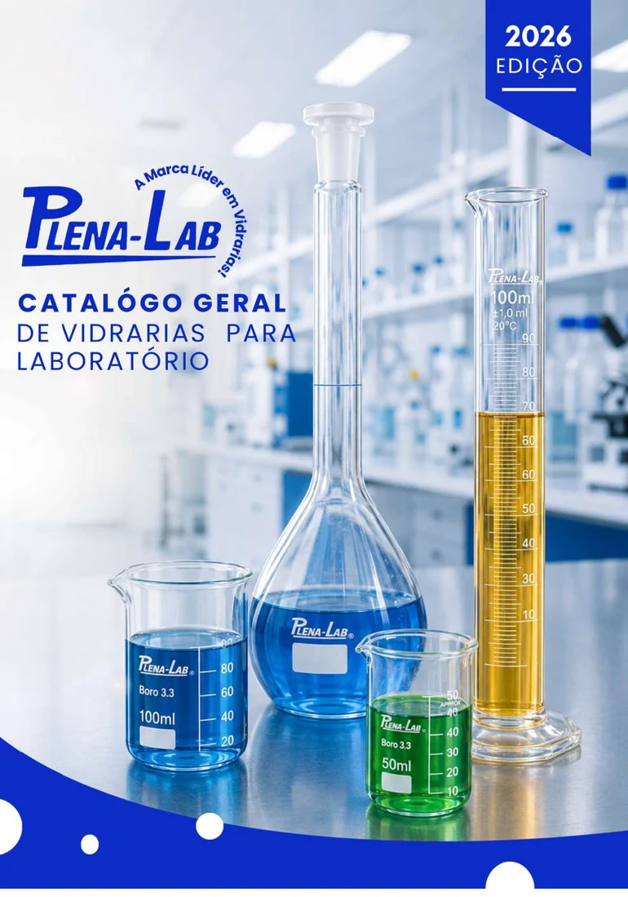
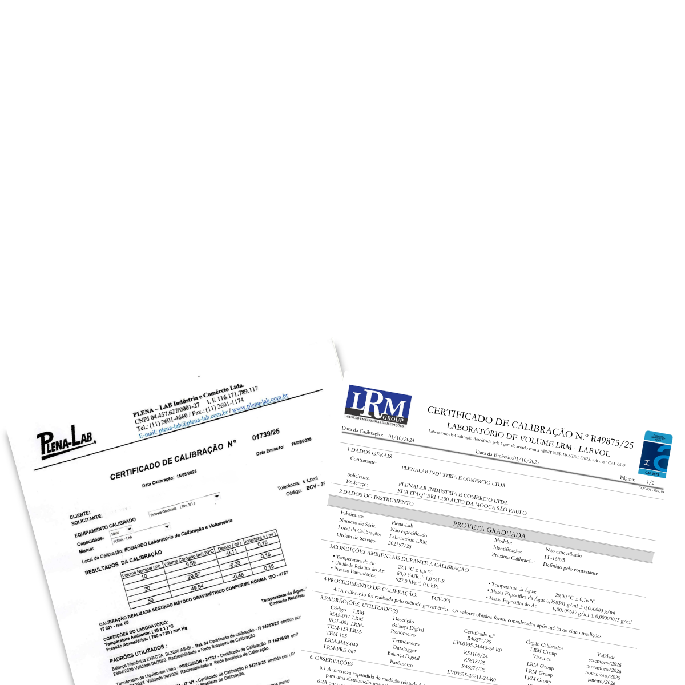

Catálogo
Conheça nossa linha de vidrarias.
Conheça as vidrarias Plena-Lab e encontre as referências, capacidades e modelos para a rotina do seu laboratório.
Nosso portfólio.
Ao seu alcance.

Encontre sua linha no catálogo.
Abra o PDF na seção que você procura.

Precisa de vidrarias sob medida?
Fabricamos conforme sua amostra, seu desenho técnico ou suas especificações técnicas.
Solicitar avaliação pelo WhatsAppCertificados de Calibração
A Plena-Lab fornece vidrarias laboratoriais com certificados de calibração, garantindo qualidade, precisão e confiabilidade nas medições.
- SELO RBC
- Certificado de calibração emitido por laboratório acreditado pelo Inmetro, com reconhecimento nacional e internacional.
- Certificado Rastreável RBC
- Documenta a rastreabilidade dos resultados a padrões de medição por meio de uma cadeia de calibrações ligada à RBC. É emitido na modalidade rastreada, sem o símbolo de acreditação.
Oferecemos soluções para atender às necessidades de laboratórios, indústrias e instituições de ensino.

